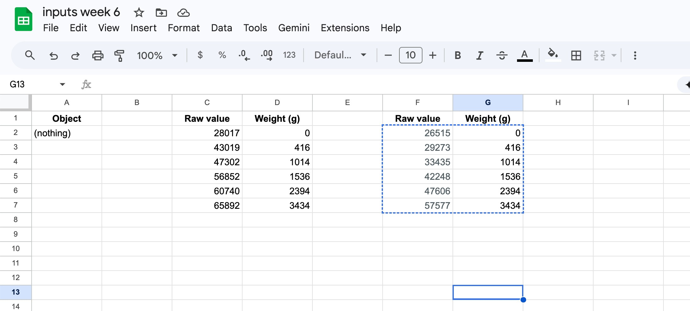
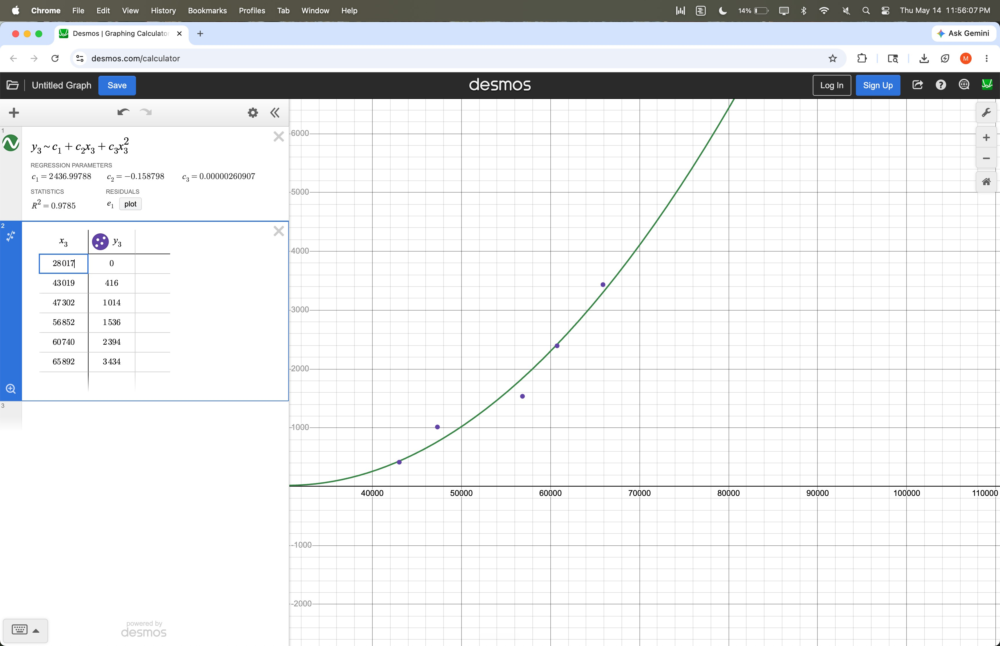

<div class="textcontainer">
<p class="margin"> </p>
<h3>Week 6: Electronic Inputs</h3>
<br>
<h4>Assignment 1: Capactive Sensor<h4>
Matthew and I created the sponge sandwich, aka a capacitive sensor to detect weight. By placing a sponge and two copper plates between wooden boards, we could place objects on top and measure the distance compressed to get an estimate of gravitational force and therefore mass. This mass was then projected onto a OLED display for a real-time reading.
The code is at the bottom of the webpage below the CNC file.
<figure>
<img src="./Sponge sandwich.JPG" alt="Our sponge sandwich capacitive sensor" width=30% height=10%>
<img src="./Supervised tower.JPG" alt="Matthew stacking a precarious tower of weights" width=30% height=10%>
<figcaption> Sponge sandwich capacitive sensor (L) and Matthew stacking a precarious tower of weights under my supervision (R)
</figcaption>
</figure>
<br>
The weights were weighed with a scale in the resin area and used to calculate error and convert the capacitive sensor output to an actual mass. Clearly the relationship between capactiance and mass is not linear.
<figure>
<p></p>
<p></p>
<figcaption> Spreadsheet of data (L) and data graphed (R)
</figcaption>
</figure>
Here is the sensor and OLED screen in action!
<iframe src="https://drive.google.com/file/d/1tRemOUN7Hv0s1rHKYM797ST8y-zxF4bh/preview" width="640" height="480"></iframe>
<br>
<h4>Assignment 2: Hall Effect Distance</h4>
For assignment 2 I decided to us a Hall effect sensor as an input and a LED strip as an output. The imput from the Hall effect sensor ranged from 3300 to 0. The LED strip will go from red to blue as you get closer to the magnets. The code is at the bottom of this webpage.
<iframe src="https://drive.google.com/file/d/1cH7NwXSVH1zcPkiBEYl7b05IwUTm_gSD/preview" width="640" height="480"></iframe>
<br>
<h4>CNC File</h4>
I had the idea to CNC plaster casing for a pushpin. I was considering a jellyfish, dumbo octopus, or ocean sunfish, and decided on ocean sunfish because of its relatively round shape. This is the CAD file I made. For more info, please see Week 8!
<p class="margin"> </p>
<div class="flexrow">
<a id="btn" href="./Ocean Sunfish.zip" download>Download the Ocean Sunfish .stl
</a>
</div>
<p class="margin"> </p>
<h3>Code for Capacitive Sensor</h3>
<pre>
<code>
/*
* Capacitive Weight Sensor with OLED Display
* XIAO ESP32-C3 + SSD1306 0.96" 128x64 OLED
*
* Wiring:
* Sensor:
* TX plate -> D6
* RX plate -> A0 (D0)
* 1 MΩ resistor between A0 and GND
* OLED:
* VCC -> 3.3V, GND -> GND, SDA -> D4, SCL -> D5
*
* Calibration (quadratic from Desmos, R² = 0.988):
* weight = c1 + c2*raw + c3*raw^2
*/
#include <Wire.h>
#include <Adafruit_GFX.h>
#include <Adafruit_SSD1306.h>
// --- Sensor pins & params ---
const int RX_PIN = D0;
const int TX_PIN = D6;
const int N_SAMPLES = 100;
// --- Calibration coefficients (from latest Desmos fit) ---
const float C1 = -2486.85477f;
const float C2 = 0.0933895f;
const float C3 = 1.60704e-7f;
// --- OLED ---
#define OLED_WIDTH 128
#define OLED_HEIGHT 64
#define OLED_ADDR 0x3C // try 0x3D if 0x3C doesn't work
Adafruit_SSD1306 display(OLED_WIDTH, OLED_HEIGHT, &Wire);
// --- Smoothing: rolling average of last N readings ---
const int SMOOTH_N = 5;
long buf[SMOOTH_N] = {0};
int buf_i = 0;
long readCapacitive() {
long sum = 0;
for (int i = 0; i < N_SAMPLES; i++) {
digitalWrite(TX_PIN, HIGH);
int high = analogRead(RX_PIN);
delayMicroseconds(100);
digitalWrite(TX_PIN, LOW);
int low = analogRead(RX_PIN);
sum += (high - low);
}
return sum;
}
long smooth(long raw) {
buf[buf_i] = raw;
buf_i = (buf_i + 1) % SMOOTH_N;
long total = 0;
for (int i = 0; i < SMOOTH_N; i++) total += buf[i];
return total / SMOOTH_N;
}
float toGrams(long raw) {
float r = (float)raw;
float g = C1 + C2 * r + C3 * r * r;
if (g < 0) g = 0;
return g;
}
void setup() {
Serial.begin(115200);
pinMode(TX_PIN, OUTPUT);
Wire.begin(); // default SDA=D4, SCL=D5
if (!display.begin(SSD1306_SWITCHCAPVCC, OLED_ADDR)) {
Serial.println("SSD1306 init failed — check wiring and address");
while (true) delay(1000);
}
display.clearDisplay();
display.setTextColor(WHITE);
display.setTextSize(1);
display.setCursor(0, 0);
display.println("Calibrating...");
display.display();
// Pre-fill smoothing buffer
for (int i = 0; i < SMOOTH_N; i++) buf[i] = readCapacitive();
}
void loop() {
long raw = readCapacitive();
long avg = smooth(raw);
float grams = toGrams(avg);
// Serial output
Serial.print(avg);
Serial.print("\t");
Serial.println(grams, 1);
// OLED output
display.clearDisplay();
// Big weight readout
display.setTextSize(3);
display.setCursor(0, 12);
if (grams < 1000) {
display.print((int)grams);
display.setTextSize(2);
display.print(" g");
} else {
display.print(grams / 1000.0f, 2);
display.setTextSize(2);
display.print(" kg");
}
// Small raw-value readout at the bottom
display.setTextSize(1);
display.setCursor(0, 54);
display.print("raw=");
display.print(avg);
display.display();
delay(50);
}
</code>
</pre>
<h3>Hall Effect Sensor Code</h3>
<pre>
<code>
#include <Adafruit_NeoPixel.h>
const int HALL_SENSOR_PIN = D0;
// Pin for LED strip
#define PIN D1
#define NUMPIXELS 5
#define DELAYVAL 500 // Time (in milliseconds) to pause between pixels
#define APIWAIT 60000
// setting PWM properties
const int freq = 5000;
const int resolution = 8;
Adafruit_NeoPixel strip(NUMPIXELS, PIN, NEO_GRB + NEO_KHZ800);
int halleffect;
int red;
int green;
int blue;
void setup() {
pinMode(HALL_SENSOR_PIN, INPUT);
// Optional serial monitor
Serial.begin(115200);
// -------------------------------------------------------------------
strip.begin(); // INITIALIZE NeoPixel strip object (REQUIRED)
strip.show(); // Turn OFF all pixels ASAP
strip.setBrightness(10); // Set BRIGHTNESS low to reduce draw (max = 255)
}
void getLit(int hall, int &r, int &g, int &b) {
if (hall < 500) { // blue
r = 0; g = 0; b = 255;
} else if (hall < 1500) { // green
r = 0; g = 255; b = 0;
} else if (hall < 3000) { // yellow
r = 255; g = 255; b = 0;
} else { // red
r = 255; g = 0; b = 0;
}
}
void loop() {
// --------------------------------------------------------------
// Control light strip
strip.clear(); // Set all pixel colors to 'off'
int sensorState = analogRead(HALL_SENSOR_PIN);
// The first NeoPixel in a strand is #0, second is 1, all the way up
// to the count of pixels minus one.
for(int i=0; i<NUMPIXELS; i++) { // For each pixel...
getLit(sensorState, red, green, blue);
strip.setPixelColor(i, strip.Color(red, green, blue));
// strip.Color() takes RGB values, from 0,0,0 up to 255,255,255
// Here we're using a moderately bright green color:
strip.show(); // Send the updated pixel colors to the hardware.
// delay(DELAYVAL); // Pause before next pass through loop
}
Serial.println(sensorState);
}
</code>
</pre>
</div>